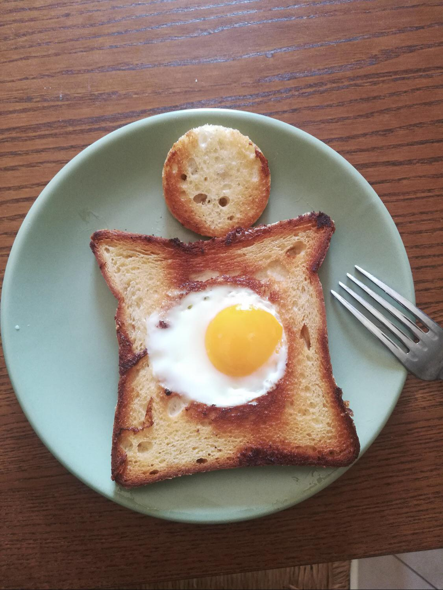

The Breakfast

Description
An American breakfast is a hearty and diverse meal, typically featuring a combination of eggs prepared in various ways, such as scrambled or fried, alongside crispy bacon or savory sausage. Toast or bread, often accompanied by butter or jam, is a common side dish, while hash browns or home fries provide a satisfyingly crispy option. Sweet treats like pancakes or waffles, topped with butter and maple syrup or fruit, add a touch of indulgence. Cereal with milk and fresh fruit provide lighter options, while coffee or juice serves as the quintessential morning beverage. Pastries or muffins may also make an appearance, offering a tempting sweet complement to the savory fare. Whether you prefer savory or sweet, American breakfasts offer a delicious array of choices to start your day.
Ingredients
- Eggs
- Bacon or sausage
- Bread or toast
- Potatoes (for hash browns or home fries)
- Pancake mix or waffle mix
- Maple syrup
- Butter
- Milk
- Fresh fruit
- Breakfast cereal
- Orange juice or other fruit juices
- Coffee
- Jam or jelly
- Cheese
- Muffin mix or pastry dough
Step by Step Instruction
- Beat eggs in a bowl until well mixed.
- Heat a non-stick skillet and add butter or oil.
- Pour eggs into the skillet and cook until the edges set.
- Gently push cooked edges towards the center with a spatula.
- Continue cooking until eggs are set but still slightly moist.
- Season eggs with salt and pepper.
- Cook bacon or sausage in a separate skillet until browned and crispy.
- Toast bread slices until golden brown.
- If making hash browns, squeeze excess moisture from grated potatoes and season with salt and pepper.
- Cook hash browns in a skillet until golden brown and crispy.
- Prepare pancake or waffle batter according to package instructions.
- Cook pancakes or waffles on a greased griddle or waffle iron until golden brown.
- Brew coffee or pour fruit juice into glasses.
- Arrange cooked eggs, bacon or sausage, toast, hash browns, and pancakes or waffles on a serving platter.
- Serve with butter, syrup, jam, or other desired condiments.
- Enjoy your delicious American breakfast!